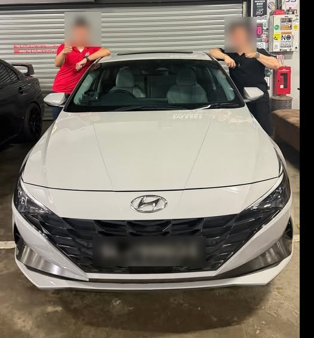

A used Hyundai Avante is a sensible choice in Singapore if you want a reliable, fuel-efficient and comfortable car at good value. Check the exact variant, the owner count, the service history and the cabin wear, then have a workshop inspect it before you pay in full.

The Avante has become one of the best-selling models at our showroom. We describe it as reliable, fuel-efficient, comfortable and good value. That mix suits first cars, small families and anyone who wants a calm daily drive.
Elite, Hybrid and other variants
Not every Avante is the same. The Elite is the higher-spec trim, with more features than the basic version. The Hybrid is petrol-electric, built for lower fuel use in town.
We are not quoting prices or fuel figures here, because they vary by unit and by how you drive. Check the exact variant on the log card and in the listing. Do not rely on the advert title alone.
Why it suits first cars and families
The Avante is easy to live with. It is comfortable on longer drives and simple to park. Many first-time buyers also like that it does not feel like a stretch. Families like the cabin space and the easy-going nature of the car.
If this is your first car, read our guide to buying your first used car in Singapore. It covers the steps in plain terms.
Why condition matters more than the listing
Two Avantes of the same variant can feel very different. One may have had a careful owner who serviced on time and kept the cabin clean. Another may have been driven hard and neglected. The listing photos will not always show this.
That is why we suggest looking at the whole picture. Read the service invoices. Sit in the car for a while. Press every button. Ask the dealer what was done to the car after it arrived, and ask to see proof. A calm, honest answer is a good sign.
A short checklist for a used Avante
- Owner count. Fewer owners usually means a clearer story.
- Mileage against condition. A number on its own says little. Look at the pedals, steering wheel and seats and see if they match.
- Service history. Ask for invoices and check that servicing was regular.
- Seats and cabin wear. Light-coloured seats show stains and wear quickly. Look closely at the driver's side.
- Pre-purchase inspection. Have a workshop check the car before you pay in full.
- Depreciation. Learn how it is shown in a listing. Our explainer on what depreciation means on a car listing helps. For rules on COE and transfers, check LTA OneMotoring.
Ask a dealer to source the car to your spec
If the car you want is not in stock, you can ask us to find it. In August 2026, a buyer asked us to source an Avante Elite when we had none. His checklist was clear: Elite model only, low mileage, low owner count and well maintained.
We found one and arranged a pre-purchase inspection, which came back with good results. Before handover, we polished the exterior, professionally cleaned the interior, including the light-coloured seats, and serviced the car. You can read more about our car sourcing service, or our general advice on how to find a specific used car in Singapore.
What a calm handover looks like
In August 2026, two first-time buyers collected their Avantes a week apart. We walked one of them through the condition of the car, the ownership costs, the paperwork and the handover process. There was no hard selling. First-time buyers should expect that kind of patience from a dealer.
Which variant suits you?
If most of your driving is short trips around town, the Hybrid is worth a close look. If you care more about features and comfort, the Elite may suit you better. Either way, drive the exact car you plan to buy, not a similar one. Take your time, and bring someone who will ask the questions you forget.
Put your requests in writing
In August 2026, a first-time buyer chose an Avante Hybrid. He asked for a polish and dechroming, and both were written into the sales agreement. If you ask for anything extra, get it on paper. Our article on what to put in a used car sales agreement explains how.
Questions to ask before you buy
- Which variant is this, and where can I see it confirmed?
- How many owners has it had, and why did the last one sell?
- What servicing or repairs were done before it came to you?
- Can I take it to my own workshop for an inspection?
- What exactly is included in the price, and will it be in the agreement?
A dealer who answers these without hurry is one you can work with. If an answer feels vague, ask again or walk away.
Selling or trading in your Avante
Owners trade in Avantes with us too. In July 2026, an owner traded in her Avante, which was in a rare original factory colour, for a modified Kia Stinger. If you are thinking about the same move, tell us the car's details and what you want next.
Questions about a specific unit? Contact us and we will go through it with you.
Related guides: Used car sales agreement in Singapore: what to put in writing
Frequently asked questions
Is a used Hyundai Avante reliable?
We describe it as reliable, fuel-efficient, comfortable and good value. Any individual car still depends on its service history and condition, so get it inspected.
What is the difference between the Avante Elite and the Hybrid?
The Elite is the higher-spec trim. The Hybrid is petrol-electric and built for lower fuel use in town. Check the exact variant on the log card and in the listing.
Is the Avante a good first car in Singapore?
Many first-time buyers choose it because it is comfortable and easy to live with. Take your time, ask about ownership costs and paperwork, and do not skip the inspection.
Can you find an Avante to my specification?
Yes. Tell us the variant, mileage, owner count and condition you want, and we will search. We also arrange the inspection and prepare the car before handover.